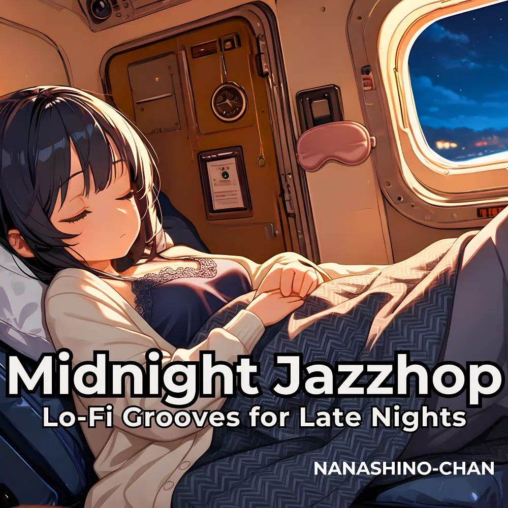

Jazzhop · Lo-Fi
Midnight Jazzhop:Lo-Fi Grooves for Late Nights
Nanashino-chan
Nanashino-chanの「Midnight Jazzhop:Lo-Fi Grooves for Late Nights」。Jazzhop / Lo-Fiを楽しめる全20曲のインストゥルメンタル作品です。「Soft Glow / Smooth Sax」などを収録。気になる曲を試聴して、配信サービスでお気に入りを見つけてください。
2025-04-16 リリース · 20 曲 · Instrumental
アルバムを試聴
気になる音楽を、ここから。
曲を選ぶまでジャケットを表示します。試聴にはYouTubeを使用します。
YOUTUBE PREVIEW
試聴する曲を選んでください
曲を選ぶまでジャケットを表示します。試聴にはYouTubeを使用します。
再生できない場合は、配信サービスでアルバムや曲を開いてください。
配信サービスでアルバムを探す
「検索」のリンクは検索結果を開きます。サービス内でアルバムや曲を選択してください。
収録曲一覧 20
- 01Soft Glow
- 02Smooth Sax
- 03Late Night Groove
- 04
- 05Tranquil Keys
- 06Mellow Flow
- 07Quiet Night
- 08Serene Sax
- 09Piano Drift
- 10Peaceful Beats
- 11Gentle Waves
- 12Midnight Melody
- 13Evening Jazz
- 14
- 15Calm Echoes
- 16Dreamy Vibes
- 17Quiet Flow
- 18Lo-Fi Journey
- 19Mellow Reflections
- 20Night's End
SNSで使いたい音源を探す
「Nanashino-chan ＋ 曲名」をコピーして、SNSアプリの音源検索に貼り付けてください。音源の表示は地域やアカウントにより異なります。コピー機能は利用許諾を付与するものではありません。